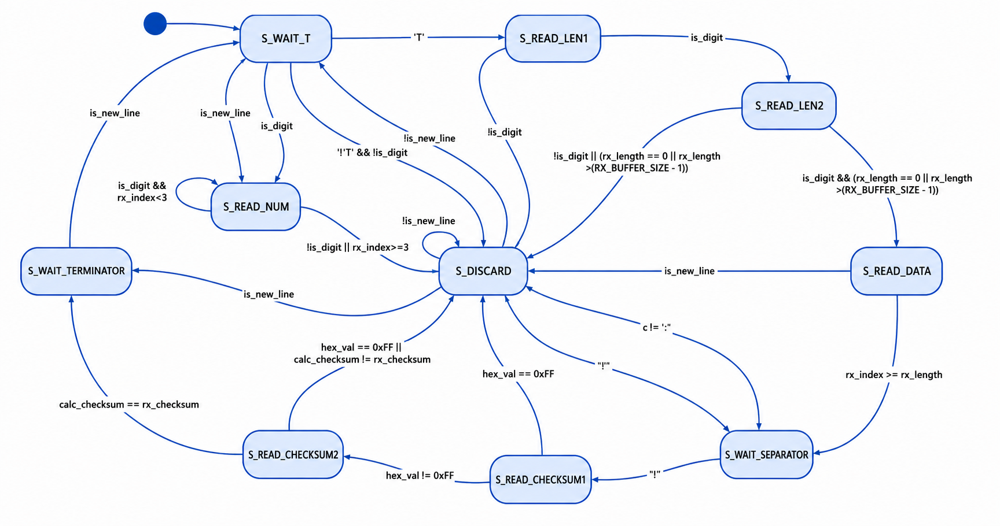
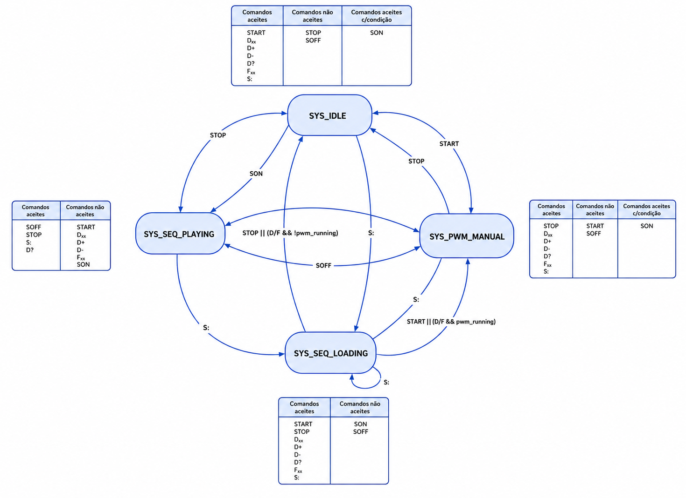

Arquiteturae Tecnologiade Computadores II
LED e motor controlados à distância.
Unidade curricular
Arquiteturae Tecnologiade Computadores II
Ano
2.º ano, 2.º semestre · 2025/26
Equipa
2 elementos
Um controlador de PWM (Pulse Width Modulation) num microcontrolador EFM8BB3 (Keil uVision), em linguagem C, comandado remotamente por um protocolo próprio sobre UART.
O objetivo seria para regular à distância o brilho de um LED ou a velocidade de um motor, e também para reproduzir automaticamente uma sequência de valores, por exemplo: criar uma sinusoide.
O sinal PWM é gerado pelo PCA0 (Programmable Counter Array), usado em dois módulos ao mesmo tempo: o Módulo 0 gera a onda PWM em si (8 bits de resolução, duty-cycle 0–100%); o Módulo 1 funciona como temporizador de software, usado só para cadenciar a reprodução automática de sequências.
Toda a comunicação série corre por interrupção, com dois buffers circulares (FIFO) de 32 bytes — um de receção, outro de transmissão — para que o programa principal nunca fique bloqueado à espera de um byte.
Os comandos chegam por UART a 115200 bps num formato próprio, pensado para detetar erros de transmissão:
| Campo | Exemplo | Significado |
|---|---|---|
T | T | início de trama |
cc | 03 | comprimento dos dados, 2 dígitos |
<dados> | D75 | o comando em si |
*hh | *B0 | checksum em hexadecimal |
\n | \n | fim de trama |
Exemplo completo: T03D75*B0\n — define o duty-cycle a 75%. O checksum é a soma dos valores ASCII de cada byte dos dados ('D'+'7'+'5' = 0xB0).
Se o comando for inválido, é rejeitado e o sistema responde ERR.
| Comando | Ação |
|---|---|
Dxx | define o duty-cycle (0–100%) |
D+ / D- | incrementa/decrementa 1% |
D? | consulta o estado atual |
START / STOP | liga/desliga a saída PWM |
Fxxxx | define a frequência (1–10000 Hz) |
S:xx | inicia carregamento de uma sequência de xx pontos |
SON / SOFF | liga/desliga a reprodução da sequência |
O sistema tem duas máquinas de estado distintas, que trabalham em conjunto: o parser de tramas e o controlo global do sistema, de modo a garantir que só se executam comandos válidos no momento certo.


Além do controlo manual, é possível carregar até 30 pontos de duty-cycle e depois reproduzi-los automaticamente.